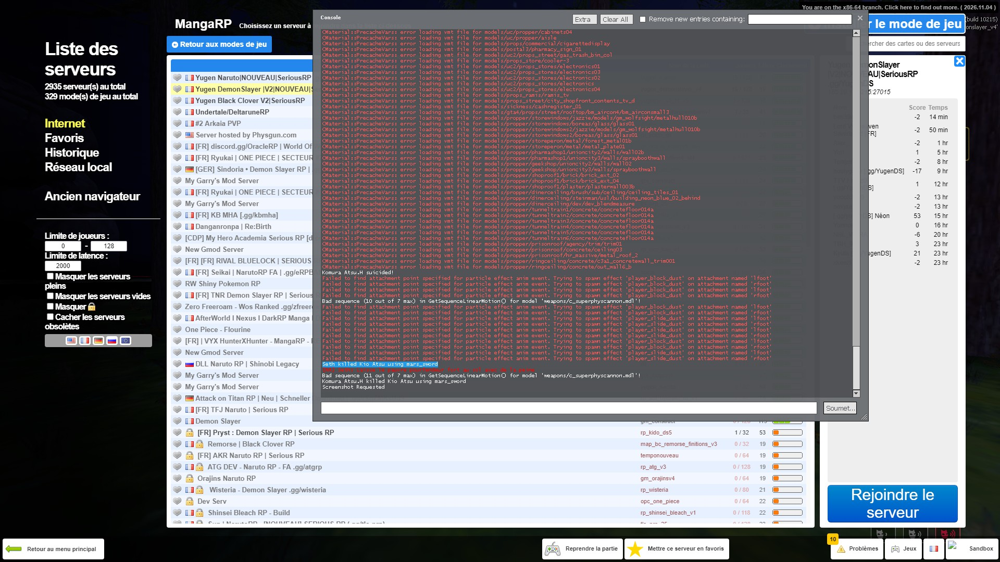

Seth
Démon du pouvoir de l’Acide. Registre personnel des actions, preuves et rapports.
Une force corrosive. Une volonté implacable. Découvrez les archives du pouvoir de l’Acide, ses membres, ses actions et les lames récupérées.
Démon du pouvoir de l’Acide. Registre personnel des actions, preuves et rapports.
Pouvoir : Acide
Excellence de référence : Iroh Jin.
Les anciennes illustrations du Sombre Éclair ont été retirées pour correspondre au nouveau pouvoir.
Nouvelle Excellence de l’Acide. Cette section est désormais entièrement consacrée à Iroh Jin et à la direction du pouvoir de l’Acide.
Une identité visuelle toxique, une atmosphère sombre et une volonté de progression au sein de l’Ordre.
Espace destiné aux événements et comptes rendus du pouvoir de l’Acide.
Suivi des entraînements de griffe, d’oratoire et des exercices de progression.
Archives des sorties, observations et interventions démoniaques.
Comptes rendus, preuves et activités à ajouter au fil des événements RP.
Trois récupérations enregistrées. Les captures originales restent disponibles comme preuves RP.
Souffle du pourfendeur : Fleur
Grade du pourfendeur : Faible

Souffle du pourfendeur : Eau
Grade du pourfendeur : Fort

Souffle du pourfendeur : Eau
Grade du pourfendeur : Fort

Aucun rapport détaillé enregistré pour le moment. Les futurs rapports pourront être ajoutés ici, sans modifier les preuves existantes.